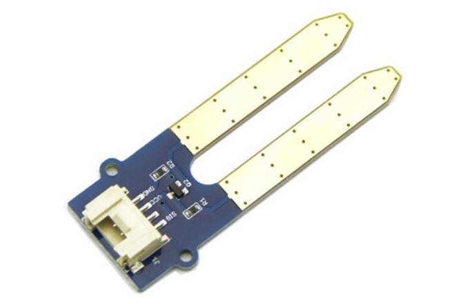
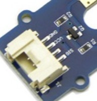

Umidità del terreno - Moisture Sensor
Il sensore che vedete in figura permette di stimare l'umidità del terreno.

Inserendo le due sonde metalliche nella terra, una piccola corrente passa tra di esse. La corrente che circola e' proporzionale alla resistenza del suolo la quale é proporzionale alla quantità di acqua presente nel terreno.
Un segnale elettrico analogico viene portato a un pin dell'ESP32 che esegue una conversione Analogica --> Digitale del segnale elettrico.
Viene usato spesso in progetti di irrigazione automatica o monitoraggio di piante.
Conversione Analogico-Digitale (AD Converter - ADC)
Un segnale analogico è un segnale continuo, cioè può assumere qualsiasi valore di tensione in un certo range (nel nostro caso 0–3.3V). Il problema è che un microcontrollore lavora in digitale, quindi capisce solo numeri interi.
L'ADC (Analog-to-Digital Converter) fa proprio questa conversione: "campiona" la tensione in ingresso e la trasforma in un numero intero. Con una risoluzione a 12 bit hai a disposizione 2^12 = 4096 valori possibili (da 0 a 4095), quindi la conversione funziona così:
valore = (tensione_letta / tensione_massima) × 4095
Per esempio:
- 0V → 0
- 1.65V (metà) → ~2047
- 3.3V → 4095
Più bit hai, più il valore digitale è preciso e "vicino" al segnale analogico reale. Con 12 bit la risoluzione minima è circa 3.3V / 4095 ≈ 0.8 mV, cioè riesci a distinguere variazioni di tensione di meno di 1 millivolt.
Schema di collegamento
Il Grove-Moisture Sensor ha tre pin:
1. VCC (alimentazione)
2. GND (massa)
3. SIG (segnale)

Collegamento:
- VCC del sensore → 3.3V della ESP32
- GND del sensore → GND della ESP32
- SIG del sensore → Un pin analogico dell'ESP32 (ad esempio, GPIO34)
Nota: L'ESP32 opera a 3.3V, quindi alimentare il sensore a 3.3V è essenziale per evitare di danneggiare la scheda.
Codice in micropython del sensore
# leggere i dati da un sensore di umidità del terreno (moisture sensor).
# Questo sensore utilizza un'uscita analogica per misurare il livello di umidita' .
# Il codice di esempio usa l'uscita analogica del sensore per ottenere letture più precise.
import machine
import time
# valore da impostare precedentemente facendo una misura in aria (umidità 0)
# e con la sonda in acqua (umidità 100%)
MIN_VALUE = 0
MAX_VALUE = 2380
# Configurazione del pin analogico al quale è collegato il sensore
MOISTURE_PIN = 34 # Cambia questo numero in base al pin utilizzato (es. A0 su alcune schede)
# Inizializzazione dell'ADC (Analog-to-Digital Converter)
adc = machine.ADC(machine.Pin(MOISTURE_PIN))
adc.atten(machine.ADC.ATTN_11DB) # Configurazione dell'attenuazione per supportare 0-3.3V
adc.width(machine.ADC.WIDTH_12BIT) # Imposta la risoluzione a 12 bit (valori da 0 a 4095)
# Funzione per mappare il valore letto su una scala percentuale
def converti_in_perc(value, min_value=MIN_VALUE, max_value=MAX_VALUE):
perc = value * 100 / max_value
return perc
# return max(0, min(100, (value - min_value) * 100 / (max_value - min_value)))
while True:
# Leggi il valore analogico dal sensore
moisture_value = adc.read()
# Converti il valore in percentuale di umidità (0-100%)
moisture_percentage = converti_in_perc(moisture_value, min_value=MIN_VALUE, max_value=MAX_VALUE)
if moisture_percentage > 100:
moisture_percentage = 100
if moisture_percentage < 0:
moisture_percentage = 0
# Stampa i risultati
print("Valore grezzo: {moisture_value}", moisture_value)
print("Umidità del terreno: {moisture_percentage:.2f}%", moisture_percentage)
# Attendi 1 secondo prima della prossima lettura
time.sleep(3)
Calibrazione
La calibrazione serve a trovare i valori reali che il tuo sensore restituisce nei due casi estremi, dato che ogni sensore è leggermente diverso e i valori teorici (0 e 4095) raramente corrispondono alla realtà.
Come fare:
-
Misura in aria (0% umidità) – tieni il sensore con le sonde all'aria aperta e leggi il valore con
adc.read(). Quel numero sarà il tuoMIN_VALUE. -
Misura in acqua (100% umidità) – immergi le sonde in un bicchiere d'acqua e leggi di nuovo il valore. Quel numero sarà il tuo
MAX_VALUE.
In pratica nel codice sotto basta leggere moisture_value nel ciclo while:
while True:
# Leggi il valore analogico dal sensore
moisture_value = adc.read()
print(moisture_value) # valore utile per la calibrazione aria-acqua
Una volta ottenuti i due valori, puoi mappare qualsiasi lettura in una percentuale con una semplice proporzione:
Così un valore di MIN_VALUE darà 0% e un valore di MAX_VALUE darà 100%, indipendentemente dai valori grezzi dell'ADC. I valori compresi tra MIN_VALUE e MAX_VALUE avrà un valore compreso tra 0% e 100%.
Codice: Programmazione dell'ADC
Il codice configura l'ADC del microcontrollore (ESP32) per leggere il segnale analogico del sensore. Ecco cosa fa ogni parte:
machine.ADC(machine.Pin(MOISTURE_PIN))
Collega l'ADC al pin fisico dove è connesso il sensore.
adc.atten(machine.ADC.ATTN_11DB)
Imposta l'attenuazione a 11dB, che permette di leggere tensioni nel range 0 – 3.3V (senza attenuazione il range sarebbe molto più limitato, circa 0-1V).
adc.width(machine.ADC.WIDTH_12BIT)
Imposta la risoluzione a 12 bit, quindi il valore letto sarà un numero intero tra 0 e 4095, dove:
- 0 = tensione 0V → suolo secco (alta resistenza, poca corrente)
- 4095 = tensione 3.3V → suolo bagnato (bassa resistenza, molta corrente)
In pratica, quando leggi il valore con adc.read(), ottieni un numero in questo range che rappresenta quanto è umido il terreno. Poi puoi mapparlo in una percentuale o confrontarlo con soglie per decidere, ad esempio, quando attivare un'irrigazione.